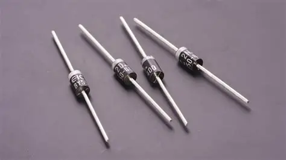
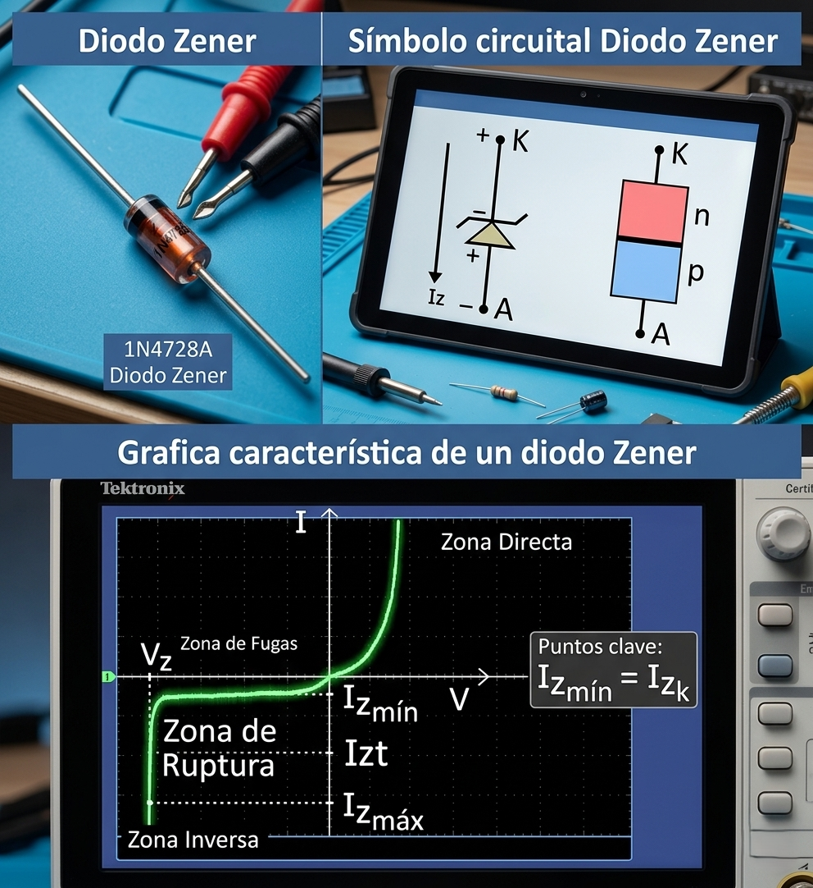
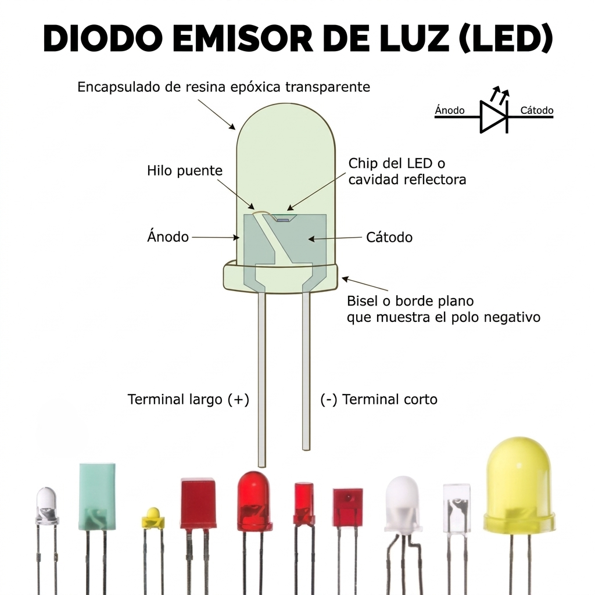
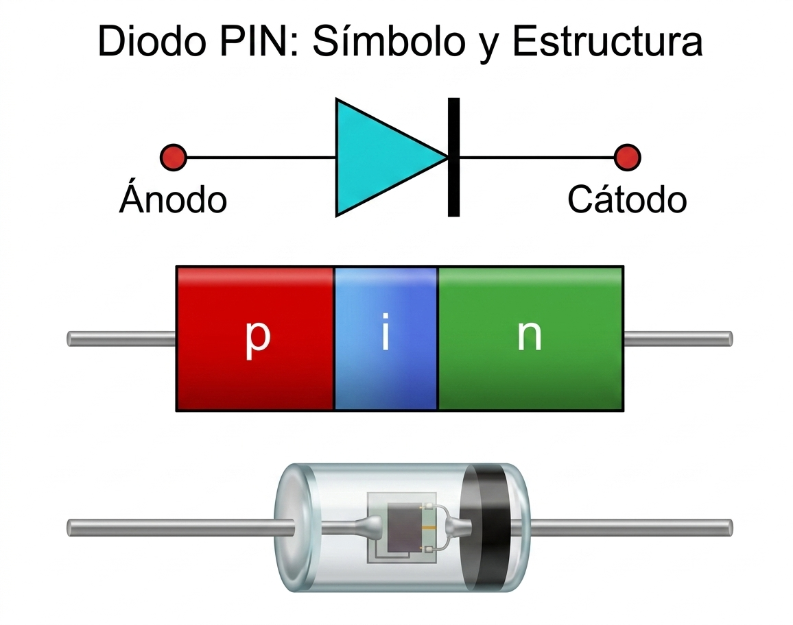

<div>El Diodo de Unión PN</div>
El diodo semiconductor representa el dispositivo más elemental y crítico en la arquitectura de los circuitos electrónicos modernos, siendo un componente de dos terminales con un comportamiento intrínsecamente no lineal. Su estructura se fundamenta en la unión de dos materiales semiconductores extrínsecos, uno de tipo P y otro de tipo N, lo que genera una interfase conocida como unión PN. La propiedad definitoria del diodo es su capacidad de permitir el flujo de corriente eléctrica en una sola dirección predominante mientras actúa como un bloqueador efectivo en el sentido opuesto.
Para comprender este fenómeno desde una perspectiva sistémica, se puede emplear la analogía funcional de una válvula hidráulica de retención (check valve): al igual que esta válvula permite el paso de fluido solo cuando se aplica presión en el sentido correcto y se cierra herméticamente ante cualquier intento de flujo inverso, el diodo actúa como un "regulador de sentido único" para los portadores de carga eléctrica. Físicamente, el dispositivo consta de dos electrodos específicos: el Ánodo, correspondiente a la región dopada de tipo P (polo positivo para la conducción), y el Cátodo, vinculado a la región de tipo N (polo negativo). El dominio de estos conceptos es esencial para el estudio de aplicaciones avanzadas que van desde la protección de circuitos hasta la rectificación de potencia.
La versatilidad de la unión PN permite la existencia de diversos tipos de diodos optimizados para funciones específicas dentro de un sistema electrónico:
Diodo Rectificador
Es el dispositivo más elemental de la familia, diseñado para permitir el paso de la corriente en un solo sentido y bloquearla en el opuesto. Su aplicación principal es la rectificación, proceso mediante el cual se convierte la corriente alterna (CA) en corriente continua (CC) pulsante. En fuentes de alimentación, estos diodos eliminan los semiciclos de polaridad opuesta de la señal de entrada, permitiendo que la carga reciba una señal monopolar.

Diodo Zener
A diferencia de los diodos convencionales, el Zener está diseñado para operar de forma controlada en la región de ruptura inversa. Su propiedad fundamental es mantener una tensión constante (V_Z) entre sus terminales, incluso ante variaciones significativas de la corriente inversa. Debido a esto, se utiliza primordialmente como regulador de voltaje y estabilizador de tensión en las etapas de salida de las fuentes de alimentación.

Diodo LED (Diodo Emisor de Luz)
Es un tipo especial de diodo que, al ser polarizado en sentido directo, emite energía en forma de fotones a través de un proceso llamado electroluminiscencia. El color de la luz emitida depende del material semiconductor (como arseniuro de galio o fosfuro de galio) y de la energía liberada durante la recombinación de electrones y huecos en la unión. Requieren obligatoriamente una resistencia en serie para limitar la intensidad de corriente y evitar su destrucción térmica.

Diodo Pin
Es un diodo semiconductor con una capa intrínseca entre las regiones P y N, utilizado en aplicaciones de alta frecuencia, fotodetección y control de potencia.
Estructura y Principio de Funcionamiento
El diodo PIN se compone de tres capas: una región tipo P, una región intrínseca (I) no dopada y una región tipo N. La capa intrínseca actúa como aislante y aumenta la distancia entre las regiones P y N, lo que le confiere propiedades especiales frente a un diodo PN convencional. En polarización directa, la corriente fluye a través del diodo, mientras que en polarización inversa presenta alta impedancia, lo que lo hace útil para manejar señales de alta frecuencia y potencia.
Está diseñado principalmente para aplicaciones de radiofrecuencia (RF) y microondas. Su nombre proviene de su estructura (capas P-Intrínseca-N). Funciona como una resistencia variable controlada por corriente; cuando se le aplica una corriente directa, su resistencia disminuye, permitiendo su uso como interruptor o atenuador en circuitos de alta frecuencia.

Caso práctico
Un técnico de mantenimiento se encuentra reparando un circuito simple de corriente continua que alimenta un motor pequeño. Al sustituir un componente dañado, conecta accidentalmente un diodo rectificador en serie con el motor, pero lo instala con polarización inversa (el cátodo hacia el polo positivo de la fuente).
¿Qué sucederá con el funcionamiento del motor al cerrar el interruptor del circuito y cuál es la razón física de este comportamiento?